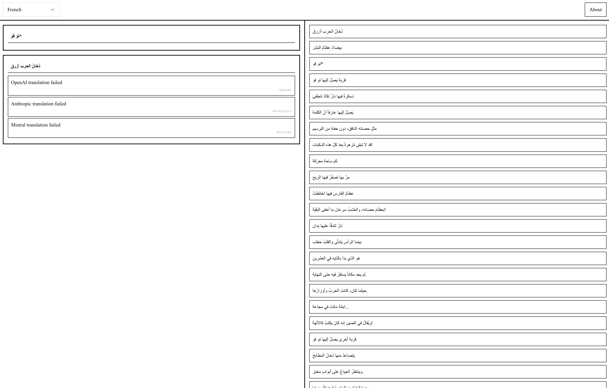
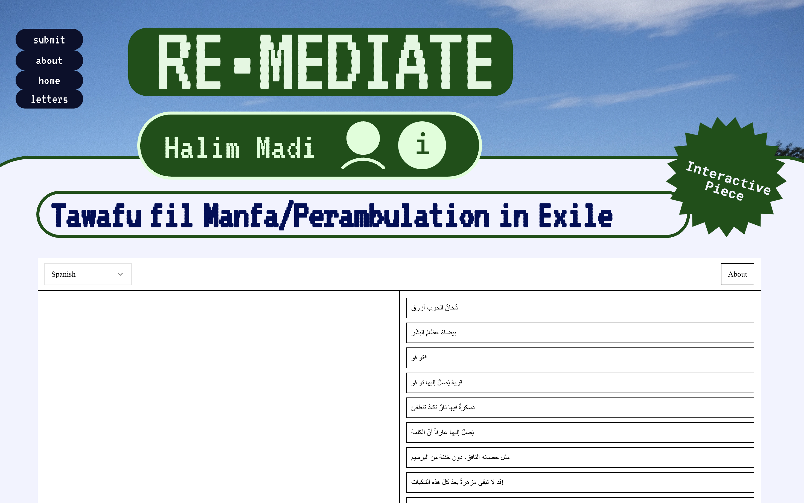

Tawafu fil Manfa

On the right of the screen sits Sargon Boulus’s Arabic poem Tawafu fil Manfa, a jagged meditation on exile and displacement. On the left, its splinters. Each line, when dragged across the screen, is fractured into three different English translations. As if the poem, in motion, passes through multiple lenses, semantic, cultural, computational, and each refracts it differently.
This is not translation as bridge. It is translation as dissolution, multiplication, deformation. Each drag is a traversal. Each traversal is a break.
As the lines shift from Arabic to English, their meanings are diluted, or over-determined, or strangely beautified. Some fragments shimmer with unintended poetry. Others fall apart entirely. In this space, language becomes translucent. Meaning passes through, but never intact. You could call it linguicide. You could also call it a kind of rebirth.
The models that produce these translations, statistical, neural, poetic, human, are not neutral actors. They are agents of loss, of aesthetic judgment, of cultural violence. They carry in them entire histories of what can and cannot be rendered, what survives the crossing, what gets erased. The interface stages this crossing again and again. Not as a one-time act of betrayal, but as a loop, a tawaf, circling meaning’s absence.
In this space, exile is not only thematic. It is enacted. The original poem becomes exiled from itself. And in doing so, it reveals something: the untranslatable isn’t just a problem to be solved. It is a truth to be felt.
Published in re·mediate Issue 4 (MachineWitness, Fall 2025). A quiet drag-and-drop requiem for every word that didn’t make it across.
